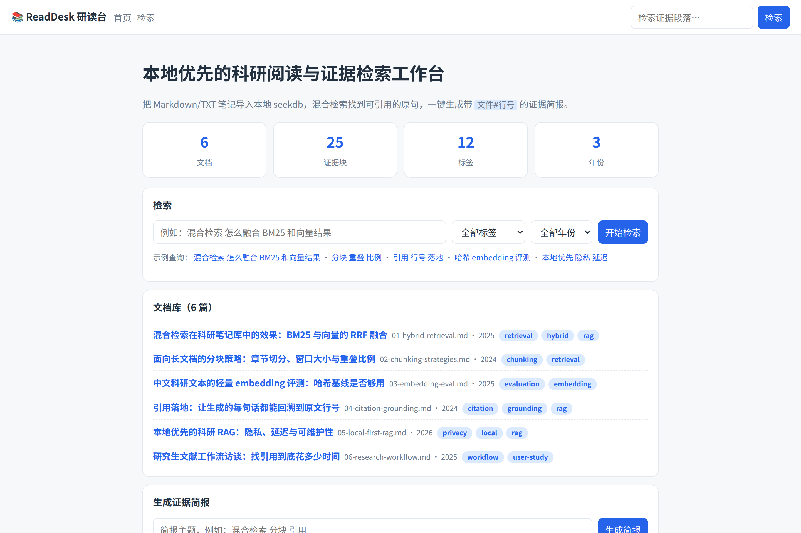
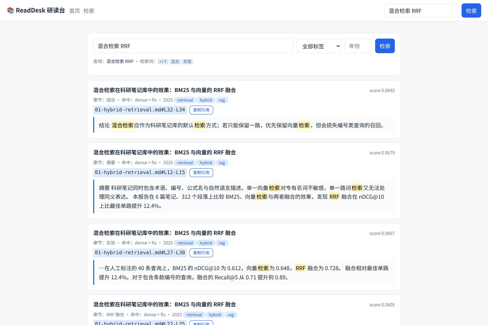
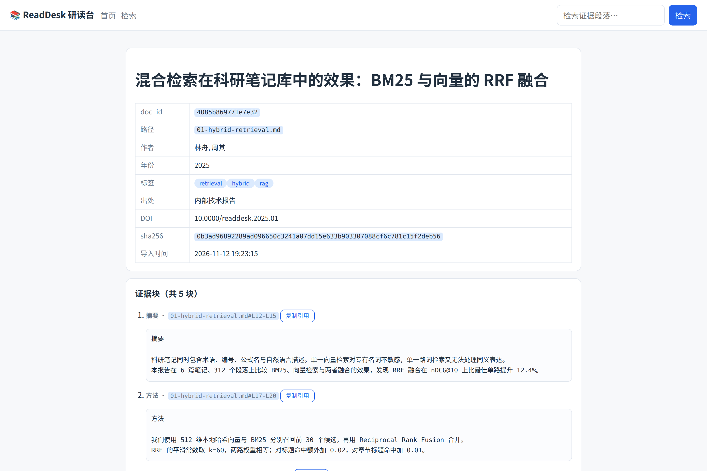

引用不可回溯
通用搜索只给文档链接，不告诉你原句在哪一节、哪一行，写综述时仍要重新翻 PDF。
本地优先 · 科研阅读 · 证据检索
ReadDesk 把散落在文件夹里的论文笔记导入本地 seekdb 库，用向量 + 全文混合检索找回原句，
每一条结果都带 文件#行号，一键生成可直接贴进综述的证据简报。

为什么需要它
通用搜索只给文档链接，不告诉你原句在哪一节、哪一行，写综述时仍要重新翻 PDF。
摘录、批注、灵感散落在多个工具，下次写作时无法按主题重新召回。
论文草稿、实验记录与基金申请不适合上传第三方服务，云端 RAG 有合规顾虑。
核心功能
读取 Markdown/文本的 front matter 与标题结构，按章节切块，保留起止行号，写入本地 seekdb。
readdesk import ~/papers
512 维本地哈希向量 + seekdb 全文过滤 + tag/year 下推，RRF 融合后返回可复制的证据段落。
readdesk search "混合检索 RRF"
按文档分组，先列原文再写要点，附覆盖统计与引用清单，直接进入写作流程。
readdesk brief "检索融合" --out brief.md

文件#起行-止行 与命中来源。
交互式演示
下面的结果由 ReadDesk 在本地对 6 篇样例笔记实际检索后导出，页面只做静态展示，不发起网络请求。
技术实现
| seekdb | 嵌入式集合 readdesk_chunks，HNSW cosine 512 维；全文 $contains 与 tag/year 标量过滤都在库内完成。 |
|---|---|
| 混合检索 | dense + 全文双路召回，RRF（k=60）融合，并为标题/章节命中加权。 |
| 本地 embedding | 分词 + 字符 n-gram + 带符号特征哈希，512 维、L2 归一化，同文本同向量，不调用模型。 |
| Web | FastAPI + Jinja2，中文界面，静态资源本地化，离线可用。 |
| 引用 | 入库即记录 path#start-end，检索/简报只引用真实行号。 |
数据目录：./.readdesk，可用 --data-dir 覆盖；不发送任何网络请求。
Qoder 开发记录
使用 Qoder CLI CN（qoderclicn）的 headless 模式，以 SPEC.md 为唯一需求源，
在一个 71 回合的无头会话里完成“实现 → 自测 → 修复”，耗时 25.7 分钟、消耗 20.86 credits。
提示词、工具调用、修改文件、测试输出与用量都保存在 qoder-dev/。
qoder-dev/run*.jsonlqoder-dev/run*.prompt.mdqoder-dev/TRANSCRIPT.md验收
python -m readdesk init
python -m readdesk import samples/library
python scripts/verify.py验收使用临时数据目录，不污染仓库；所有查询结果来自真实 seekdb 检索。
开始使用
需要 Linux x86_64、Python 3.12。seekdb 以嵌入式 wheel 安装，无需额外数据库服务。
git clone https://github.com/Aric9/powercontext.git
cd powercontext/qoder
python3.12 -m venv .venv && . .venv/bin/activate
pip install -r requirements.txt
python -m readdesk init
python -m readdesk import samples/library
python -m readdesk serve --port 8765